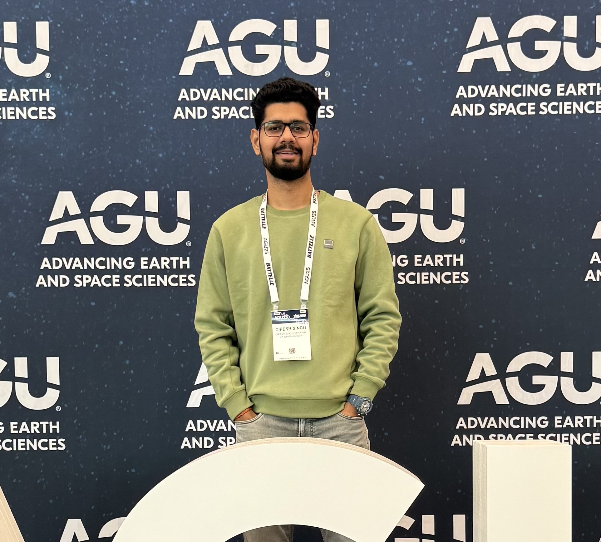

Drought Atlas of India
Led the development of a national portal for visualisation, monitoring, and assessment of drought hazards across India, built on 120 years of reconstructed data (1901–2020).
indiadroughtatlas.inPhD Scholar · Prime Minister's Research Fellow
I study hydrological modeling, climate extremes, and remote sensing to understand how climate change is reshaping India's rivers, droughts, floods, and water security.
Water and Climate Lab, Department of Civil Engineering
Indian Institute of Technology (IIT) Gandhinagar, India

I am a PhD researcher in Civil Engineering at IIT Gandhinagar (thesis submitted, June 2026), working with Prof. Vimal Mishra at the Water and Climate Lab. My research combines hydrological modeling, paleoclimate reconstructions, climate projections, and remote sensing to understand long-term changes in India's water cycle, and what they mean for the hundreds of millions of people who depend on it.
My work on the Ganga River, published in PNAS, showed that its recent drying is unprecedented over the last 1,300 years and was featured in Nature India. Beyond peer-reviewed research, I develop operational hydroclimatic tools, including drought atlases, flood forecasting systems, and hydro-meteorological decision-support platforms, that bridge scientific research and real-world applications. These tools provide actionable information to farmers, water-resource managers, and disaster-response agencies, enabling informed decisions for climate adaptation, water management, and risk reduction.
I was selected as a Prime Minister's Research Fellow (PMRF, direct entry) and received the Climate Change Impact Study award from the Government of Gujarat for contributions to climate-change impact assessment and hydroclimatic research in India.
Led the development of a national portal for visualisation, monitoring, and assessment of drought hazards across India, built on 120 years of reconstructed data (1901–2020).
indiadroughtatlas.inContributed to a real-time hydro-meteorological monitoring and forecasting platform and mobile app for disaster-prone villages in India, in collaboration with IndusInd Bank and UNICEF, supporting climate-risk management and agricultural decisions for farmers.
climateadapt.inContributed to an experimental flood-inundation forecasting system for the Brahmaputra River basin, one of the most flood-prone regions in South Asia.
Forecast portalDeveloped long-term, spatially continuous streamflow datasets across Indian sub-continental river basins (1951–2021), openly published for the research community.
Zenodo datasetContributed to the experimental real-time hydro-meteorological monitoring and forecast portal for Karnataka State, developed with ACIWRM.
ACIWRM portalContributed to the lab's portal showing India's real-time drought conditions and forecasts, supporting near real-time drought assessment for planning and management.
indiadroughtmonitor.inA 0.05° daily precipitation and maximum/minimum temperature dataset for India (1981–2024), developed using IMD observations, CHIRPS, and ERA5-Land, openly available on Zenodo.
Zenodo datasetDeveloped a long-term gridded root-zone soil moisture product for India (1981–2024), published in Scientific Data to support agricultural and drought applications.
Scientific Data2026
Observation-constrained projections reveal robust streamflow increases in Indian rivers
doi:10.1029/2025EF007928Emergence of uncompensable heat stress during monsoon season in India
doi:10.1029/2025AV001945Development of gridded root-zone soil moisture product for India, 1981–2024
doi:10.1038/s41597-026-06940-x2025
Recent drying of the Ganga River is unprecedented in the last 1,300 years Featured in Nature India
doi:10.1073/pnas.2424613122Increased drought synchronicity in Indian rivers under anthropogenic warming
doi:10.1029/2025AV001850Multi-day extreme precipitation caused major floods in India during summer monsoon of 2024
doi:10.1029/2024EF005497High-impact and low-likelihood compound hot and dry extremes in India
doi:10.1175/JCLI-D-25-0277.1Migrant laborers in India face increased heat stress driven by climate warming and ENSO variability
doi:10.1029/2025EF0061672024
Drought Atlas of India, 1901–2020
doi:10.1038/s41597-023-02856-yDrivers, changes, and impacts of hydrological extremes in India: A review
doi:10.1002/wat2.17422023
Hydrological model-based streamflow reconstruction for Indian sub-continental river basins, 1951–2021
doi:10.1038/s41597-023-02618-wIncreased hydropower but with an elevated risk of reservoir operations in India under the warming climate
doi:10.1016/j.isci.2023.105986Was the extreme rainfall that caused the August 2022 flood in Pakistan predictable?
doi:10.1088/2752-5295/acfa1a2022
The Pakistan flood of August 2022: causes and implications
doi:10.1029/2022EF003230Under review / In revision
Water withdrawals, not climate variability, disconnect nine-tenths of India's rivers
INDmet: A high-resolution (0.05°) daily precipitation and temperature dataset for India
Full publication list and citation metrics on Google Scholar.
Unprecedented drying of the Ganga River over the past 1,300 years (EGU26-16194)
Anthropogenic climate change intensifies synchronous droughts across Indian rivers
Multi-day extreme precipitation caused major floods in India during summer monsoon of 2024
High-impact climate extremes in India (with V. Mishra et al., EGU25-14675)
On the observed and projected district-level humid heat risk in India (A51U-1978)
Multi-model-based probabilistic flood forecast system for the Brahmaputra river basin (with V. Mishra et al.)
Impact of glacier and snow cover changes on streamflow variability in Himalayan river basins (C11E-1087)
Streamflow projections for Indian subcontinent river basins (EGU23-14505)
The Pakistan flood of August 2022: causes and implications (with Nanditha J. S. et al.)
Indian Institute of Technology Gandhinagar, India · Prime Minister's Research Fellow · CPI 10/10
Indian Institute of Technology Gandhinagar, India · Gold Medalist · CPI 9.10/10
Govind Ballabh Pant University of Agriculture and Technology, Pantnagar, India · 79.05%
I am open to research collaborations, postdoctoral opportunities, and conversations about hydrology, climate extremes, and water security. The fastest way to reach me is by email.
Email me